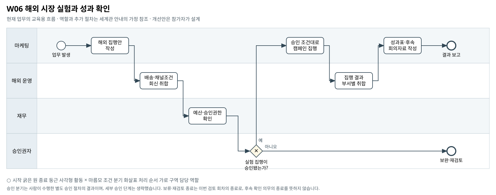

해외 시장 실험과 성과 확인
국가·채널별 확대안을 작은 실험으로 검토한다면 어떤 성과와 운영조건을 함께 확인해야 하는가?
BPMN 2.0 편집 원본 · 도식 크게 보기 · 8개 도식집 PDF


승인 분기는 사람이 수행한 별도 승인 절차의 결과이며, 세부 승인 단계는 생략했습니다. 보류·재검토 종료는 이번 검토 회차의 종료로, 후속 확인 의무의 종료를 뜻하지 않습니다.
기존 자료의 단초
- 마케팅 자료에는 인플루언서 활동 국가, 캠페인 국가, 판매채널, SNS 매체·형식이 포함돼 있다.
- Masil은 해외 인플루언서 협업·매체 집행·마켓플레이스 기획전 등 확대 선택지를 검토하는 설정이다.
- 커머스·마케팅 자료는 대표 표본이며 전사 매출·예산의 절대금액과 직접 대사할 수 없다.
- 캠페인 집행은 건별·기안총액에 따른 승인 규정과 현금 하회 예상 구간의 우선 규정이 적용된다.
주최 측의 교육용 업무 가정
- [교육용 가정] 마케팅이 해외 소규모 집행안을 작성하고 운영조건·예산을 검토받은 뒤 실행 결과를 수작업 보고하는 일반 절차를 추가했다.
- [교육용 가정] '해외 운영'은 상품·물류·판매채널 담당을 묶은 역할이다. 별도 조직의 실제 존재가 확인된 것은 아니다.
- [범위] 특정 국가·채널의 성공, 인과효과, 확장 정답은 제시하지 않는다. 여기 나열한 보완 항목은 선택 예시다. 필수 확장과 다른 부서 영향의 기준은 A01을 따른다.
미해결 지점
- 실험군·비교군, 사전 가설, 노출 배정, 성공·중단 기준이 없다.
- 국가별 실제 배송 약속·통관·현지 운영비·반품 조건의 충분한 자료가 없다.
- 표본 선택 방식과 국가·채널별 대표성을 확정할 근거가 부족하다.
확장할 때 생각할 질문
- 관측 성과와 실험으로 확인해야 할 가설을 어떻게 나눌 것인가?
- 매출 확대 전에 확인해야 할 운영조건은 무엇인가?
- 국가·채널 비교가 유효한 범위를 어떻게 설명할 것인가?
보완할 수 있는 데이터
- 가상의 소규모 실험 계획·관측 기록
- 국가별 운영조건·비용 견적과 변경 회신
- 승인·집행·중단 결정 이력
관련 원본 자료
- 00_common/Business_Process_Map.md
- 00_common/data_dictionary.md
- 00_common/approval_authority_policy.md
- 00_common/mkt_meeting_notes_ms.md
- 02_masil/master/m_influencer_ms.csv
- 02_masil/master/m_campaign_ms.csv
- 02_masil/master/m_channel_ms.csv
- 02_masil/marketing/mkt_traffic_inflow_ms.csv
- 02_masil/marketing/mkt_repurchase_ms.csv
- 02_masil/marketing/mkt_orders_ms.csv
- 02_masil/financials/covenant_terms_ms.md
그림의 관계가 원본 파일의 모든 연결키 제공을 뜻하지는 않습니다. 원본에서 확인한 관계와 추가한 매핑·가정을 구분하십시오.